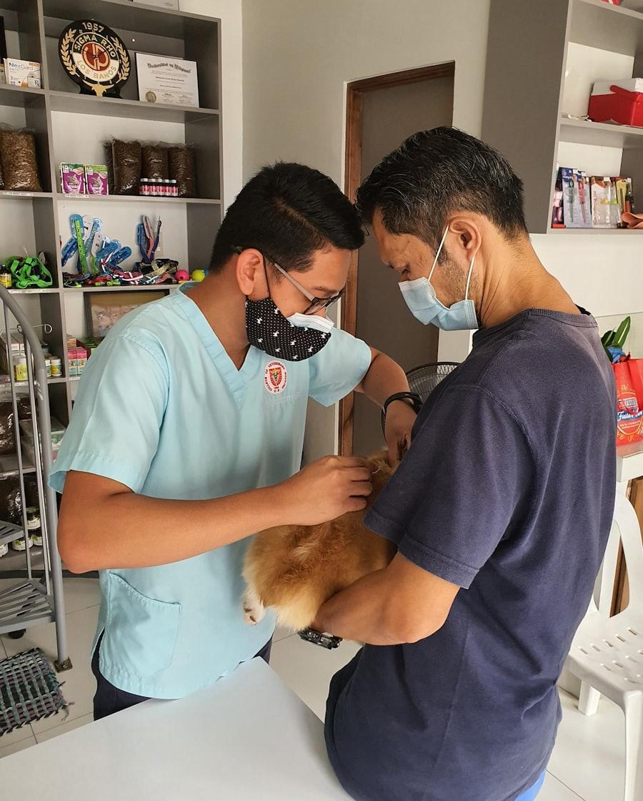

Implantación
El microchip se coloca bajo la piel del lado izquierdo del cuello con una aguja algo más gruesa que la de una vacuna. Se hace en segundos y no requiere anestesia; la mayoría de los animales apenas se inmutan.
Implantación, alta en el registro autonómico y pasaporte europeo en la misma visita, con la documentación lista para viajar.

Cómo lo hacemos
El microchip se coloca bajo la piel del lado izquierdo del cuello con una aguja algo más gruesa que la de una vacuna. Se hace en segundos y no requiere anestesia; la mayoría de los animales apenas se inmutan.
Leemos el chip inmediatamente para verificar que responde y que el número coincide con el de la etiqueta. También leemos siempre a los animales que llegan por primera vez, por si ya llevan uno antiguo.
Damos de alta el número junto a tus datos de contacto en el registro de identificación de animales de compañía de la Comunidad de Madrid. Un chip sin registrar, o registrado con un teléfono antiguo, no sirve para nada.
Emitimos el pasaporte europeo, que recoge la identificación, la vacuna antirrábica y los tratamientos aplicados. Es el documento que te van a pedir en la frontera.
El microchip no lleva GPS ni datos dentro: es solo un número. Ese número únicamente sirve si está asociado a un teléfono al que alguien conteste. La causa más frecuente de que un animal encontrado no vuelva a casa no es que no lleve chip, sino que los datos del registro están desactualizados.
Avísanos siempre que cambies de teléfono, de domicilio o de titularidad del animal. Es gratis y se hace en un minuto.
Para moverte con tu animal dentro de la UE necesitas tres cosas, y en este orden:
La vacuna antirrábica no es válida hasta 21 días después de administrarla en una primovacunación. Es el error que más viajes estropea: planifica con margen.
Algunos destinos añaden requisitos propios —tratamiento frente a Echinococcus para entrar en Irlanda, Malta, Finlandia o Noruega, por ejemplo— y los países fuera de la UE tienen sus propias reglas, a veces con análisis serológicos y meses de antelación. Dinos a dónde vas y lo comprobamos contigo.
Si tu perro está dentro de esta categoría, además de la identificación necesitas licencia municipal y seguro de responsabilidad civil. Podemos emitirte el certificado veterinario de aptitud que suele exigir el ayuntamiento como parte del trámite.
Abandonar un animal es delito, y también lo es no identificarlo cuando la norma lo exige. Pero el motivo de fondo para tener el chip al día es más simple: es lo único que hace que alguien pueda devolvértelo si un día se pierde.
Preguntas
Es un pinchazo con una aguja algo más gruesa de lo habitual. Molesta un momento y ya está. Muchas veces lo aprovechamos para hacerlo en la misma visita de la vacuna o durante una castración, ya bajo anestesia.
Sí, desde las pocas semanas de vida. En la Comunidad de Madrid debe estar puesto y registrado dentro de los plazos que fija la normativa; si tienes dudas con las fechas, llámanos.
Hay que cambiar la titularidad en el registro. Trae la documentación de la adopción o el contrato de compraventa y lo tramitamos nosotros.
Otros servicios
Cuéntanos el destino y la fecha y comprobamos qué necesita y con cuánta antelación. Mejor sobrado de tiempo que a la carrera.